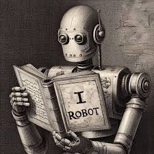

La Electronica Y su Impacto en la Sociedad
La electrónica ha transformado profundamente la sociedad moderna,
influyendo en cómo nos comunicamos, trabajamos y vivimos. Su evolución constante ha generado
nuevos dispositivos y sistemas que han cambiado radicalmente nuestra realidad.

Espero te haya gustado el artículo.
La Robotica
La robótica ha revolucionado múltiples industrias, permitiendo la automatización de tareas complejas y la creación de sistemas inteligentes que pueden interactuar con el entorno.
Desde la fabricación hasta la medicina, los robots están desempeñando un papel crucial en la mejora de la eficiencia y la calidad de vida.
A medida que la tecnología avanza, se espera que los robots sean cada vez más integrados en nuestra vida diaria, transformando la forma en que trabajamos y nos relacionamos con el mundo que nos rodea.

Espero te haya gustado el artículo.
La Inteligencia Artificial
La inteligencia artificial (IA) es una rama de la informática que se centra en la creación de sistemas capaces de realizar tareas que normalmente requieren inteligencia humana, como el aprendizaje, el razonamiento y la toma de decisiones.
La IA ha tenido un impacto significativo en diversos campos, desde la medicina hasta la industria del entretenimiento, y continúa evolucionando rápidamente.
A medida que la IA se integra cada vez más en nuestra vida cotidiana, plantea importantes preguntas éticas y sociales sobre su uso y sus implicaciones para el futuro de la humanidad.

Espero te haya gustado el artículo.